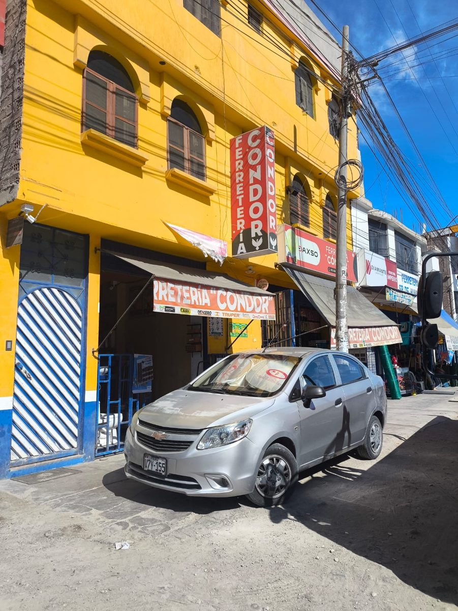
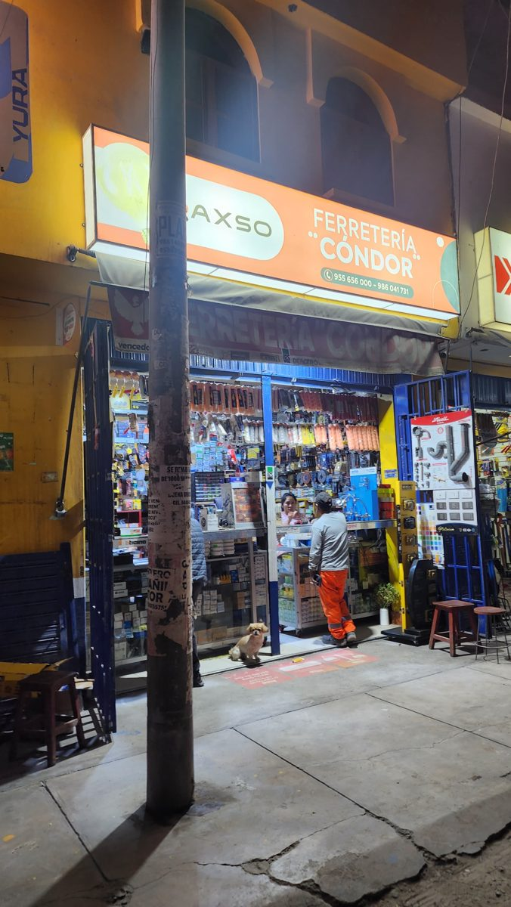
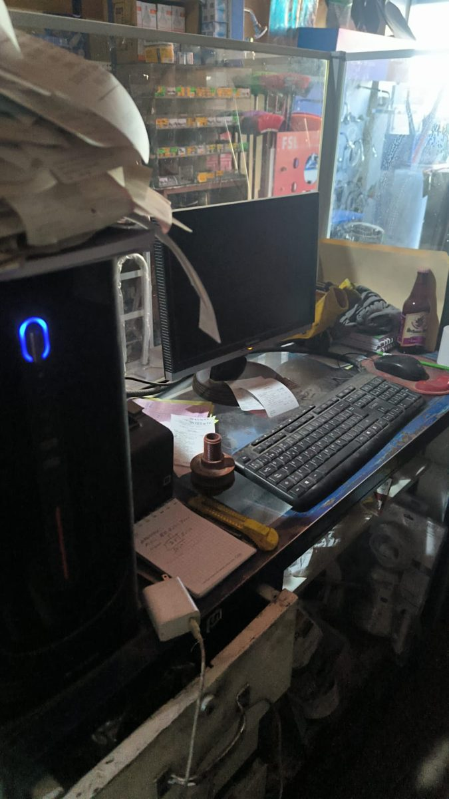

Sistema de ventas y facturación Cóndor
Propuesta de alcance para la Ferretería Cóndor Majes S.A.C.: cada venta del mostrador, con su comprobante electrónico, en menos de un minuto.
INTEGRANTES
- 01Huamani Condori, Jeanpiero Sixto
- 02Payehuanca Riquelme, Jhastyn Jefferson
- 03Condo Zamata, Richard Alberto
- 04Chaisa Fernández, Anthony Leonel
CALIDAD DE SOFTWARE 2026-B · EPIS UNSA
CÓNDOR
FERRETERÍA CÓNDOR MAJES S.A.C.
MAJES · AREQUIPA
PROPUESTA DE ALCANCE
N.º 001-2026
*** PRIMER ENTREGABLE ***
Una ferretería de barrio con tres mostradores
FERRETERÍA CÓNDOR MAJES S.A.C.
- Vende al público y a obras de construcción en Majes, Arequipa.
- Atiende con 2 a 3 vendedores por turno, de pie y con prisa en horas punta.
- Cuenta con 3 PC en el local: una principal y dos de mostrador, conectadas por red local.
- Emite boletas, facturas y guías de remisión y debe informarlas a la SUNAT.
- Un gerente (dueño), un encargado general y un contador externo toman las decisiones.


Cuaderno, talonario y la SUNAT al cerrar
CÓMO SE TRABAJA HOY
- Las ventas se anotan en un cuaderno.
- Las boletas se llenan a mano en talonarios.
- Los precios salen de una lista impresa que se desactualiza.
- La facturación electrónica se hace aparte, en el portal de la SUNAT, al cerrar.
QUÉ PROVOCA
- Colas en horas punta.
- Errores de precio y de cálculo del IGV.
- Comprobantes que no llegan a tiempo a la SUNAT.
- Compras sin registro ordenado ni información consolidada.
- No se sabe qué vendedor emitió cada comprobante.
OBSERVACIÓN PRELIMINAR EN EL MOSTRADOR
mediana por venta de 3 productos con boleta manual
boletas observadas con error en el cálculo del IGV
registro de qué usuario y qué PC emitió cada comprobante

Cuatro interesados, dos roles en el sistema
ROL 1
Vendedor
Busca productos, identifica al cliente, emite boletas, facturas, notas de venta y proformas, imprime el ticket y consulta el historial.
ROL 2
Encargado general
Todo lo del vendedor más proveedores, compras, guías de remisión, respaldos y el reporte consolidado de ventas.
| INTERESADO | ROL EN EL SISTEMA | PERFIL | USO |
|---|---|---|---|
| Vendedores de mostrador (2–3 por turno) | Vendedor | Secundaria completa, manejo básico de PC; conocen los productos. | Todo el turno |
| Encargado general | Encargado general | Técnico o experiencia administrativa; maneja compras, proveedores y guías. | Diaria |
| Gerente general (dueño) | Encargado general (consulta) | Aprueba el alcance; usa el reporte consolidado. | Semanal |
| Contador externo | Sin cuenta | Fija las reglas tributarias; revisa comprobantes a través del encargado. | Mensual |
Lo que el sistema no puede ignorar
PLATAFORMA
Windows 10/11 en las 3 PC, red local del local y una base de datos central en la PC principal.
HARDWARE
Ticketera térmica de 80 mm (ESC/POS) y lector de código de barras que funciona como teclado.
NORMATIVA SUNAT
Comprobantes electrónicos UBL 2.1 firmados; envío como máximo 3 días después de la emisión; DNI en boletas de más de S/ 700.
SEGURIDAD
Solo el servidor conoce la clave de la base; las PC acceden a los datos únicamente a través de la API, con usuario y contraseña.
ACADÉMICAS
Rutas HTTP evaluables con JMeter, interfaz automatizable para aceptación y pruebas unitarias con una herramienta equivalente a JUnit.
INFRAESTRUCTURA Y PLAZO
Sin servidor dedicado ni nube: respaldo en disco externo. Entregas el 11-11, el 25-11 y el 02-12-2026.
Supuestos: la PC principal queda encendida en horario de atención · la SUNAT y su API de guías se simulan en las pruebas · el catálogo inicial se carga desde la lista de precios en CSV de la ferretería.
Cinco mejoras que se pueden medir
| BENEFICIO | HOY | META CON CÓNDOR |
|---|---|---|
| Atender más rápido | 2 min 50 s por venta | ≤ 60 s por venta de 3 productos, solo con teclado |
| Cero errores de IGV | 2 de 12 boletas con error | 0 errores: el servidor calcula el IGV del 18 % |
| Cumplir con la SUNAT | Envío manual al cerrar el día | 100 % de comprobantes enviados, con reenvío automático |
| Saber quién vendió | Sin registro | Cada comprobante guarda el usuario y la PC que lo emitió |
| Información para el gerente | Ninguna consolidada | Reporte de ventas por día, tipo, terminal y usuario |
Tres procesos completos, de principio a fin
PN-01
Venta y facturación electrónica
- Buscar el producto por nombre o código de barras.
- Identificar al cliente por DNI o RUC.
- Emitir boleta, factura o nota de venta.
- Imprimir el ticket.
- Enviar el comprobante a la SUNAT.
PN-02
Cotización y conversión en venta
- Emitir una proforma con vigencia de 7 días.
- Recuperarla cuando el cliente vuelve.
- Convertirla en boleta o factura una sola vez.
- Rechazar proformas vencidas o ya convertidas.
PN-03
Abastecimiento
- Registrar al proveedor con RUC único.
- Registrar sus compras.
- Impedir que un comprobante de proveedor se registre dos veces.
- Solo el encargado general accede.
Los procesos se apoyan en el ingreso con roles, el catálogo, las consultas y el respaldo de la base de datos.
16 requisitos funcionales propuestos
Cada requisito llevará ID, descripción, fuente, prioridad y un criterio de aceptación observable en la ERS (G01).
8 requisitos no funcionales con su indicador
| ID | ATRIBUTO | META MEDIBLE |
|---|---|---|
| RNF-01 | Rendimiento | Sugerencias de productos en < 1 s desde la tercera letra, con 3 000 productos. |
| RNF-02 | Rendimiento | p95 ≤ 2 s y error ≤ 1 % al consultar productos y emitir boleta, con 10 usuarios por 5 min. |
| RNF-03 | Seguridad | Contraseñas con hash PBKDF2; bloqueo de 15 min tras 5 intentos; 100 % de accesos indebidos rechazados. |
| RNF-04 | Integridad | 3 PC emitiendo a la vez con 0 números de comprobante repetidos o saltados. |
| RNF-05 | Disponibilidad | Vender sin internet y reenviar el 100 % de pendientes al volver la conexión. |
| RNF-06 | Usabilidad | Venta de 3 productos con boleta, solo con teclado, en ≤ 60 s. |
| RNF-07 | Recuperabilidad | 0 registros perdidos tras reiniciar; restauración de respaldo verificada. |
| RNF-08 | Mantenibilidad | Cobertura de líneas ≥ 80 % en el paquete de lógica de negocio. |
Riesgos iniciales y cómo se mitigan
R-01 · PROBABILIDAD ALTA
Se cae internet en el local
- Impacto: los comprobantes no llegan a la SUNAT dentro de los 3 días.
- Mitigación: se sigue vendiendo sin conexión y una cola reenvía los pendientes al volver (RF-10, RNF-05).
R-02 · PROBABILIDAD ALTA
Tres PC emiten a la vez
- Impacto: números de comprobante repetidos o saltados en una serie.
- Mitigación: solo el servidor asigna el número, dentro de una transacción (RNF-04).
R-03 · PROBABILIDAD MEDIA
Falla la PC principal
- Impacto: se detienen las ventas y pueden perderse datos.
- Mitigación: base persistente y respaldo en disco externo con restauración verificada (RF-16, RNF-07).
R-04 · PROBABILIDAD MEDIA
Errores tributarios o cambios de la SUNAT
- Impacto: IGV mal calculado o comprobantes rechazados.
- Mitigación: el servidor calcula el IGV, se validan DNI y RUC, y el contador externo fija las reglas.
Riesgos preliminares: el plan completo, con probabilidad, impacto y seguimiento, se desarrollará en el G06.
Tres PC, una API, una base central
DECISIONES INICIALES
- Aplicación de escritorio operable solo con teclado (atajos F1–F11).
- API REST: las PC nunca tocan la base de datos directamente.
- Base de datos relacional en la PC principal.
- La API permite medir con JMeter; la interfaz se automatiza para la aceptación.
- La SUNAT se reemplaza por un servicio simulado en las pruebas.
Arquitectura preliminar: se detallará en el SDD (G03).
Cuatro roles cada uno, tres incrementos
| INTEGRANTE | LIDERA | COORDINA |
|---|---|---|
| Huamani Condori, Jeanpiero Sixto | G01 · G07 · dictamen G09 | Proyecto, cronograma y entregas |
| Payehuanca Riquelme, Jhastyn Jefferson | G02 · G05 · suite G09 | Comité de cambios y repositorio SVN |
| Condo Zamata, Richard Alberto | G03 · G08 | Diseño y rendimiento |
| Chaisa Fernández, Anthony Leonel | G04 · G06 | Estimación y riesgos |
Todos ejercen los roles de analista, desarrollador, responsable de configuración y evaluador de calidad.
H1 · Hoy. Alcance del producto y G01; G02 a G05 en marcha.
H2. Producto construido; G02 a G09 con evidencias de avance.
H3. Versión v1.0.0, informe final y sustentación de 20 min.
Gracias
INTEGRANTES
- 01Huamani Condori, Jeanpiero Sixto
- 02Payehuanca Riquelme, Jhastyn Jefferson
- 03Condo Zamata, Richard Alberto
- 04Chaisa Fernández, Anthony Leonel
CALIDAD DE SOFTWARE 2026-B · EPIS UNSA
CÓNDOR
FERRETERÍA CÓNDOR MAJES S.A.C.
MAJES · AREQUIPA
¡GRACIAS!
*** VUELVA PRONTO ***